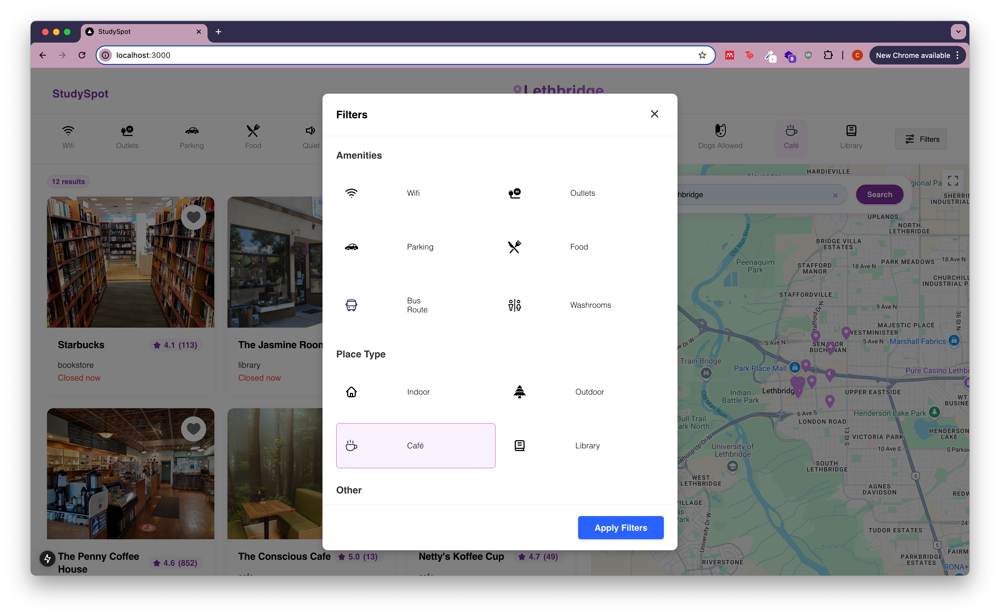
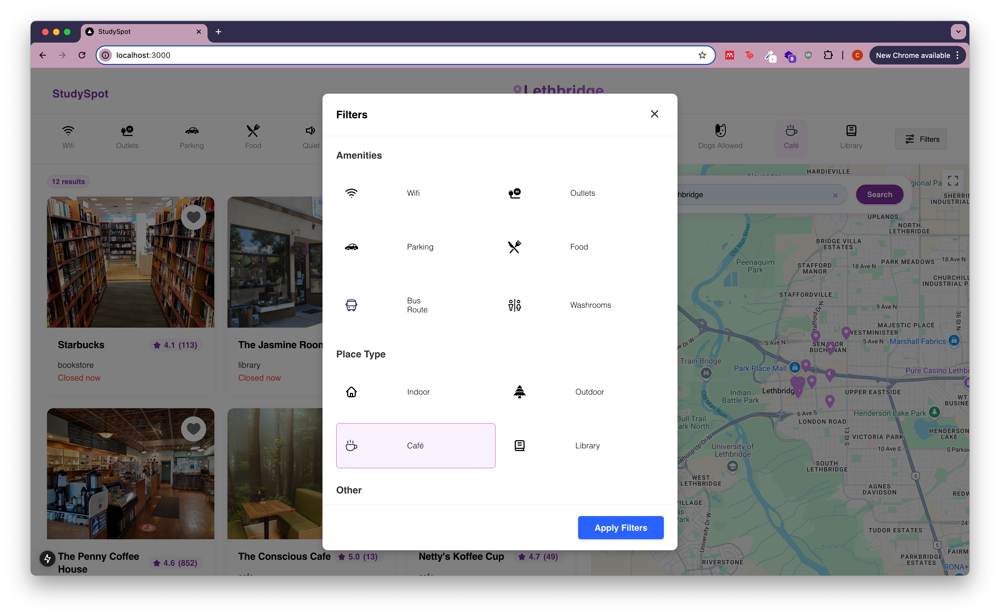

Study Spot
Overview
This is an app that allows students or remote workers to find study spots to complete their work. The user can search for their city, and filter study spots based on type and/or amenity. The details page displays information such as hours, type, address, and reviews.

Technologies:
- Next.js
- Google Maps API
- Google Places API
Objective
Continue my professional development by learning how to use Next.js, and create a solution to a problem I've had (finding good study/work spots in a new city).
Process
This is my latest project, and one that I created outside of school from idea to design to implementation. While it was tricky at first learning Next.js, a lot of the challenges came from the idea and the design. I spent a lot of time brainstorming the different things people might look for in a study spot, sketching wireframes, and making the design on Figma. To ensure it would be useful for students, I sent the idea and design to people I had gone to university with to get some valuable feedback. In the end I based the design on several other sites that use maps to display locations, taking a little inspiration from each, and adding my own twist with the smaller details such as colour scheme.
 


Result
Overall, I am happy with this basic version of the app. I have plans to add new features in the future, including:
- User profiles
- Authentication
- User favourites & reviews
- Study groups